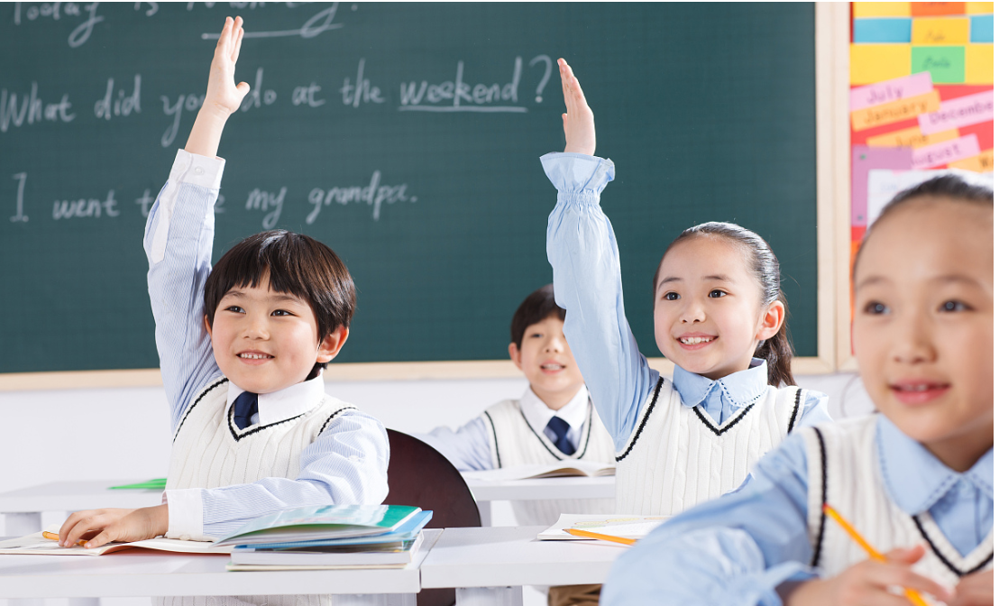

个人首页
个人简历
兴趣爱好
评价建议
Learning Journey
No pains,no gains...
09-01
2006
启程...

“池塘边的榕树上，知了在声声叫着夏天，草丛边的秋千上，还有知了停在上面，黑板上老师的粉笔还在叽叽喳喳写个不停， 等待着下课，等待着放学，等待游戏的童年。”小学是我们学习之路的起点，我们第一次真正意义上的走入课堂， 打开充满书香的课本，开始我们的学习旅途，教室内的书声朗朗，教室外的欢声笑语，充斥着我们的整个童年...
09-01
2012
在路上...
初中生活就像一个“五味瓶”，五味俱全。初中三年，我们都开始有了真正努力的方向 有了自己想要考取的高中,开始系统性的学习新的知识，有了新的生活节奏，与此同时 我们也在悄然长大，开始独自面对新的事情。同时，“一分耕耘一分收获”， 我们不断努力，以真挚诚恳的态度待人；收获友谊，共同走向美好的明天...
06-07
2018
新的征程...
高考，是一场没有硝烟的战斗，想要战胜它，我们唯有努力。高三生活无疑是 艰辛的，紧张的，甚至犹如地狱，可它已然来到，“天空不留鸟的痕迹，但我已经飞过”， 悬崖上的青松不放弃平坦难以展示自己独特的生命风采，荒野上的梅花只有放弃春天的 舒适才能磨砺自己坚强的性格，我们奋斗坚持达到自己的目标...
09-01
2018
新的篇章...
经过了高考的洗涤，我们各奔四方，走入了自己新的校园。大学校园是与众不同，融入了 天南地北与社会方圆，有来自五湖四海的同学，有丰富多彩的活动，形成了独有的校园 文化；它融入了中学时代的纯真，更包罗了世间百态，人间万象。我的大学生涯即将过半， 而我也在渐渐成长，无论如何相信自己，且行且珍惜...